TNPSC இறுதி விடைக்குறிப்புடன் சரிபார்க்கப்பட்டது
TNPSC குரூப் 4 (12.07.2025) - பொதுத் தமிழ் வினா 76 முதல் 100 வரை, விடைகளுடன்
ஒவ்வொரு வினாவும் தேர்வு வினாத்தாளில் அச்சிடப்பட்டவாறே படமாகத் தரப்பட்டுள்ளது. விடை TNPSC இறுதி விடைக்குறிப்பின்படி; அக்குறிப்பின் பகுதியும் அருகிலேயே உள்ளது. விளக்கங்கள் சமச்சீர் பாடநூல்களுடன் சரிபார்க்கப்பட்டவை.
25வினாக்கள்
496பாடக் குறியீடு
2025தேர்வு நாள் 12.07.2025
பயிற்சி முறை: ஒரு விடையைத் தொட்டால் அது சரியா தவறா என்பதும் விளக்கமும் தெரியும்.
TNPSC இறுதி விடைக்குறிப்பு - தலைப்புப் பகுதி

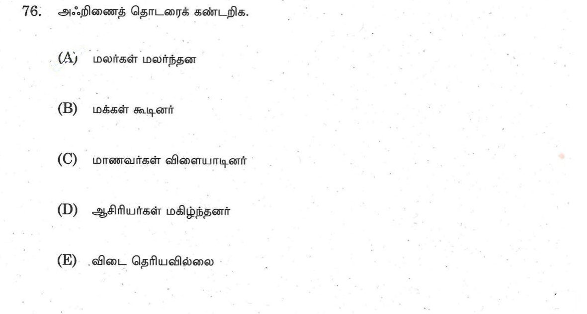
வினாத்தாள் படம் · தொட்டுப் பெரிதாக்கலாம்
அஃறிணைத் தொடரைக் கண்டறிக.
- Aமலர்கள் மலர்ந்தன
- Bமக்கள் கூடினர்
- Cமாணவர்கள் விளையாடினர்
- Dஆசிரியர்கள் மகிழ்ந்தனர்
விடையும் விளக்கமும்
TNPSC இறுதி விடை(A) மலர்கள் மலர்ந்தன
TNPSC இறுதி விடைக்குறிப்பில் வினா 76
விளக்கம்
சரியான விடை (A): மலர்கள் மலர்ந்தன. தமிழ் இலக்கணத்தில் மனிதர் அல்லாத பிற உயிரினங்களும் பொருள்களும் 'அஃறிணை' எனப்படும். 'மலர்கள்' என்பது அஃறிணைப் பொருள், அதற்குரிய 'மலர்ந்தன' என்ற பயனிலையும் சரியாக அமைந்துள்ளது.
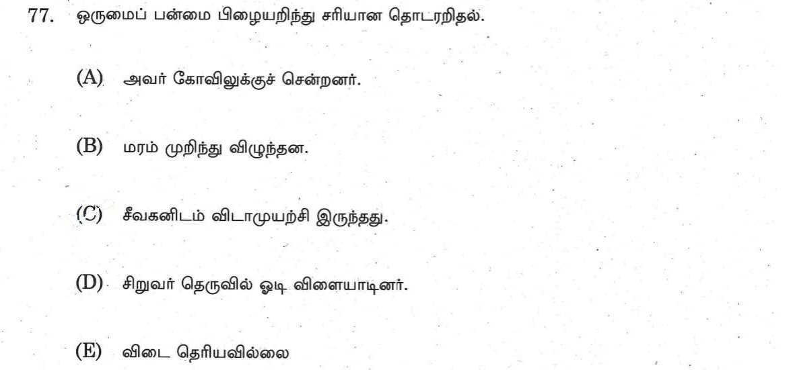
வினாத்தாள் படம் · தொட்டுப் பெரிதாக்கலாம்
ஒருமைப் பன்மை பிழையறிந்து சரியான தொடரறிதல்.
- Aஅவர் கோவிலுக்குச் சென்றனர்.
- Bமரம் முறிந்து விழுந்தன.
- Cசீவகனிடம் விடாமுயற்சி இருந்தது.
- Dசிறுவர் தெருவில் ஓடி விளையாடினர்.
விடையும் விளக்கமும்
TNPSC இறுதி விடை(C) சீவகனிடம் விடாமுயற்சி இருந்தது. / (D) சிறுவர் தெருவில் ஓடி விளையாடினர். - இவை அனைத்தும் ஏற்கப்பட்டன
TNPSC இறுதி விடைக்குறிப்பில் வினா 77
விளக்கம்
இந்த வினாவுக்கு TNPSC இறுதி விடைக்குறிப்பு C, D விடைகளை ஏற்றுக்கொள்கிறது. இரண்டு தொடர்கள் சரி: «சீவகனிடம் விடாமுயற்சி இருந்தது» (C), «சிறுவர் தெருவில் ஓடி விளையாடினர்» (D) - சிறுவர் பன்மை; பன்மை வினை சரி. A «அவர் கோவிலுக்குச் சென்றார்» என்றும், B «மரம் முறிந்து விழுந்தது» என்றும் இருக்க வேண்டும். எனவே C, D இரண்டும் ஏற்கப்பட்டன.
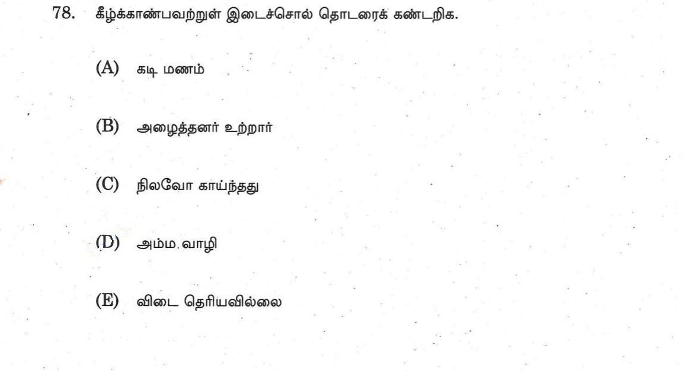
வினாத்தாள் படம் · தொட்டுப் பெரிதாக்கலாம்
கீழ்க்காணபவற்றுள் இடைச்சொல் தொடரைக் கண்டறிக.
- Aகடி மணம்
- Bஅழைத்தனர் உற்றார்
- Cநிலவோ காய்ந்தது
- Dஅம்ம வாழி
விடையும் விளக்கமும்
TNPSC இறுதி விடை(C) நிலவோ காய்ந்தது / (D) அம்ம வாழி - இவை அனைத்தும் ஏற்கப்பட்டன
TNPSC இறுதி விடைக்குறிப்பில் வினா 78
விளக்கம்
இந்த வினாவுக்கு TNPSC இறுதி விடைக்குறிப்பு C, D விடைகளை ஏற்றுக்கொள்கிறது. C, D இரண்டும் இடைச்சொல் தொடர்கள்: «நிலவோ காய்ந்தது» என்பதில் ஓ என்ற இடைச்சொல் பெயருடன் சேர்ந்துள்ளது; «அம்ம வாழி» என்பதில் அம்ம என்பதே ஒரு இடைச்சொல் (கேட்பித்தல் பொருளில் வரும் அசைநிலை). எனவே இரண்டும் ஏற்கப்பட்டன. கடி மணம் (A) உரிச்சொல் தொடர்.
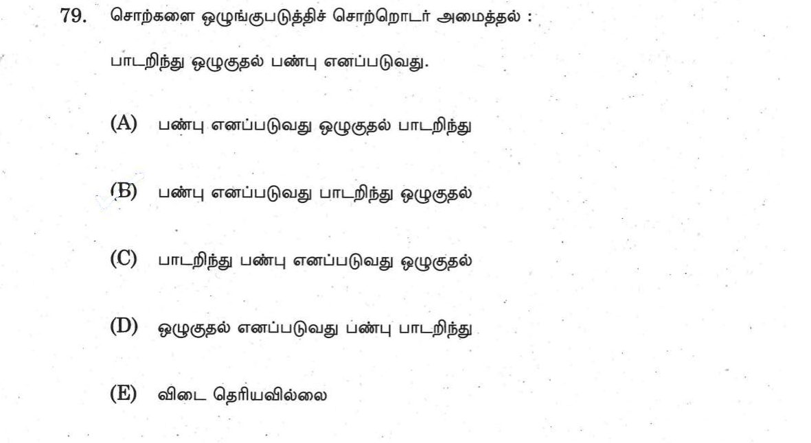
வினாத்தாள் படம் · தொட்டுப் பெரிதாக்கலாம்
சொற்களை ஒழுங்குபடுத்திச் சொற்றொடர் அமைத்தல் : பாடறிந்து ஒழுகுதல் பண்பு எனப்படுவது.
- Aபண்பு எனப்படுவது ஒழுகுதல் பாடறிந்து
- Bபண்பு எனப்படுவது பாடறிந்து ஒழுகுதல்
- Cபாடறிந்து பண்பு எனப்படுவது ஒழுகுதல்
- Dஒழுகுதல் எனப்படுவது பண்பு பாடறிந்து
விடையும் விளக்கமும்
TNPSC இறுதி விடை(B) பண்பு எனப்படுவது பாடறிந்து ஒழுகுதல்
TNPSC இறுதி விடைக்குறிப்பில் வினா 79
விளக்கம்
சரியான விடை: (B) பண்பு எனப்படுவது பாடறிந்து ஒழுகுதல். இது 8-ஆம் வகுப்புத் தமிழில் உள்ள கலித்தொகைப் பாடல் ‘பாடறிந்து ஒழுகுதல்’-இன் வரி. பாடநூல் தரும் பொருள்: ‘பண்பு எனப்படுவது சான்றோர் காட்டிய வழியில் நடத்தல்’. முதலில் ‘எது’ (பண்பு எனப்படுவது), பிறகு ‘அது என்ன’ (பாடறிந்து ஒழுகுதல்) என்று அமையும்போதே தொடர் முழுமையாகிறது.
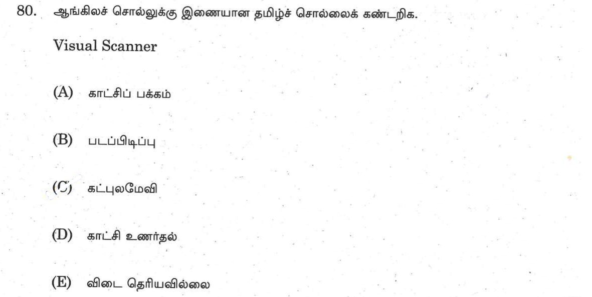
வினாத்தாள் படம் · தொட்டுப் பெரிதாக்கலாம்
ஆங்கிலச் சொல்லுக்கு இணையான தமிழ்ச் சொல்லைக் கண்டறிக. Visual Scanner
- Aகாட்சிப் பக்கம்
- Bபடப்பிடிப்பு
- Cகட்புலமேவி
- Dகாட்சி உணர்தல்
விடையும் விளக்கமும்
TNPSC இறுதி விடை(C) கட்புலமேவி
TNPSC இறுதி விடைக்குறிப்பில் வினா 80
விளக்கம்
சரியான விடை: (C) கட்புலமேவி (TNPSC இறுதி விடைக்குறிப்பு). ‘Visual Scanner’ என்பதற்கு இணையான கலைச்சொல்லாக TNPSC ‘கட்புலமேவி’-ஐ ஏற்றுள்ளது. ‘காட்சிப் பக்கம்’, ‘படப்பிடிப்பு’, ‘காட்சி உணர்தல்’ ஆகியவை வேறு பொருள் தரும் சொற்கள். குறிப்பு: இந்தக் கலைச்சொல் 6 முதல் 10-ஆம் வகுப்புத் தமிழ்ப் பாடநூல்களில் இல்லை; கலைச்சொற்களைத் தனியாகப் பட்டியலிட்டுப் படியுங்கள்.
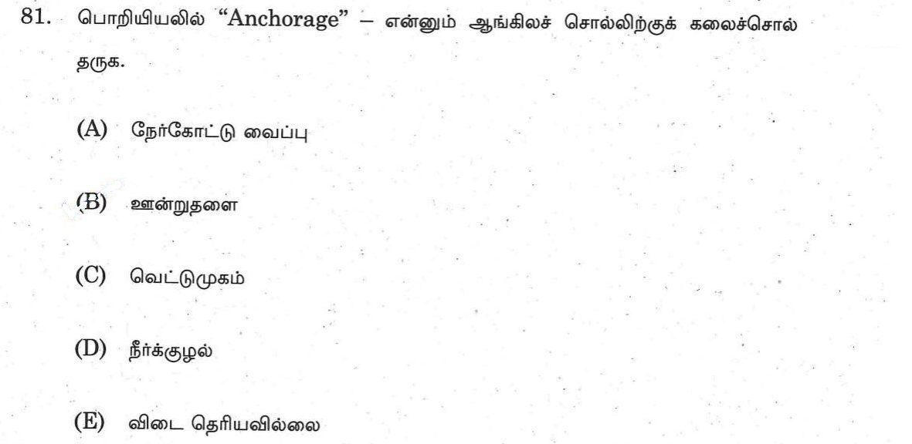
வினாத்தாள் படம் · தொட்டுப் பெரிதாக்கலாம்
பொறியியலில் “Anchorage” – என்னும் ஆங்கிலச் சொல்லிற்குக் கலைச்சொல் தருக.
- Aநேர்கோட்டு வைப்பு
- Bஊன்றுதளை
- Cவெட்டுமுகம்
- Dநீர்க்குழல்
விடையும் விளக்கமும்
TNPSC இறுதி விடை(B) ஊன்றுதளை
TNPSC இறுதி விடைக்குறிப்பில் வினா 81
விளக்கம்
சரியான விடை (B): ஊன்றுதளை. பொறியியலில் 'Anchorage' என்பதற்கான கலைச்சொல் 'ஊன்றுதளை'. ஊன்று (உறுதியாகப் பதித்தல்) + தளை (கட்டு) - ஒரு கட்டமைப்பையோ வடத்தையோ அதன் அடித்தளத்துடன் உறுதியாகப் பிணைக்கும் அமைப்பு என்பது இதன் பொருள். ஏனைய விடைகள் வேறு சொற்களுக்கான கலைச்சொற்கள்: நேர்கோட்டு வைப்பு (Linear placement), வெட்டுமுகம் (Cross section), நீர்க்குழல் (Water pipe).
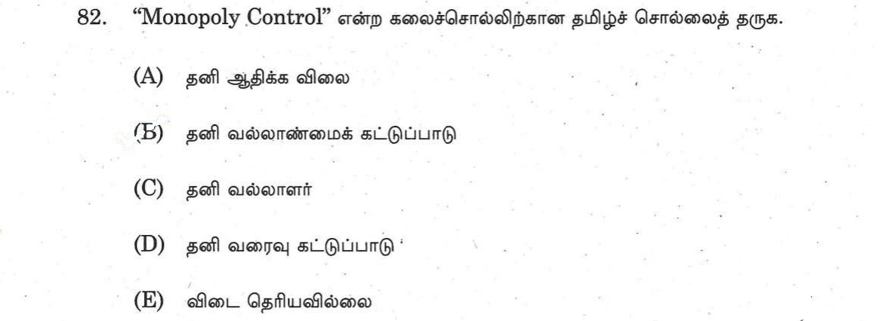
வினாத்தாள் படம் · தொட்டுப் பெரிதாக்கலாம்
"Monopoly Control" என்ற கலைச்சொல்லிற்கான தமிழ்ச் சொல்லைத் தருக.
- Aதனி ஆதிக்க விலை
- Bதனி வல்லாண்மைக் கட்டுப்பாடு
- Cதனி வல்லாளர்
- Dதனி வரைவு கட்டுப்பாடு
விடையும் விளக்கமும்
TNPSC இறுதி விடை(B) தனி வல்லாண்மைக் கட்டுப்பாடு
TNPSC இறுதி விடைக்குறிப்பில் வினா 82
விளக்கம்
சரியான விடை (B): தனி வல்லாண்மைக் கட்டுப்பாடு. 'Monopoly' என்பது தனி வல்லாண்மை (ஒரே விற்பனையாளரின் முழு ஆதிக்கம்); 'Control' என்பது கட்டுப்பாடு. எனவே 'Monopoly control' = தனி வல்லாண்மைக் கட்டுப்பாடு. ஏனைய விடைகள் வேறு சொற்களுக்கு உரியவை: தனி ஆதிக்க விலை - Monopoly price; தனி வல்லாளர் - Monopolist; தனி வரைவு கட்டுப்பாடு - 'Monopoly control' என்பதன் பொருளைத் தரவில்லை.
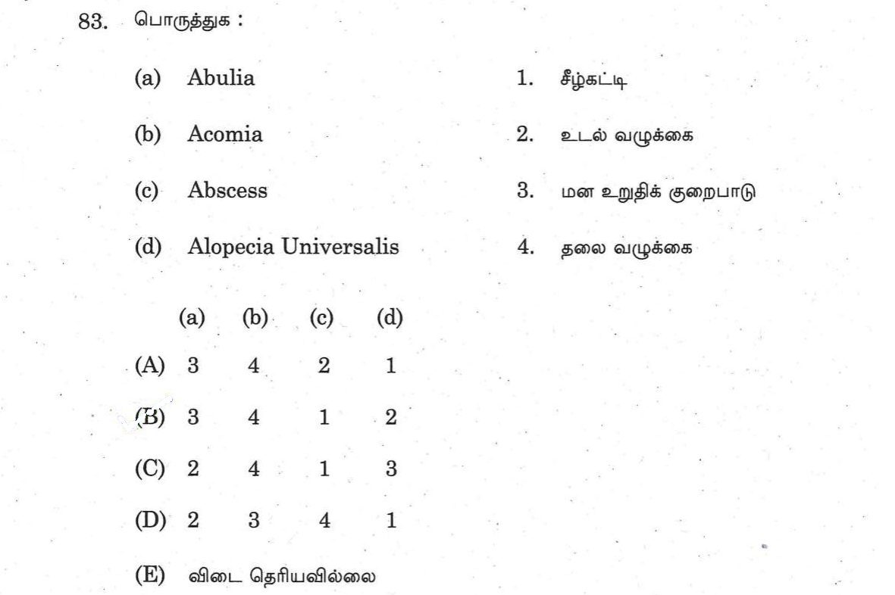
வினாத்தாள் படம் · தொட்டுப் பெரிதாக்கலாம்
பொருத்துக :
(a) Abulia - 1. சீழ்கட்டி
(b) Acomia - 2. உடல் வழுக்கை
(c) Abscess - 3. மன உறுதிக் குறைபாடு
(d) Alopecia Universalis - 4. தலை வழுக்கை
- A3 4 2 1
- B3 4 1 2
- C2 4 1 3
- D2 3 4 1
விடையும் விளக்கமும்
TNPSC இறுதி விடை(B) 3 4 1 2
TNPSC இறுதி விடைக்குறிப்பில் வினா 83
விளக்கம்
சரியான விடை (B): 3, 4, 1, 2. இது மருத்துவக் கலைச்சொற்களை அவற்றின் பொருள்களுடன் சரியாகப் பொருத்துகிறது: Abulia என்பது மன உறுதிக் குறைபாடு (3), Acomia என்பது தலை வழுக்கை (4), Abscess என்பது சீழ்கட்டி (1), மற்றும் Alopecia Universalis என்பது உடல் முழுவதும் ஏற்படும் வழுக்கை (2) ஆகும்.
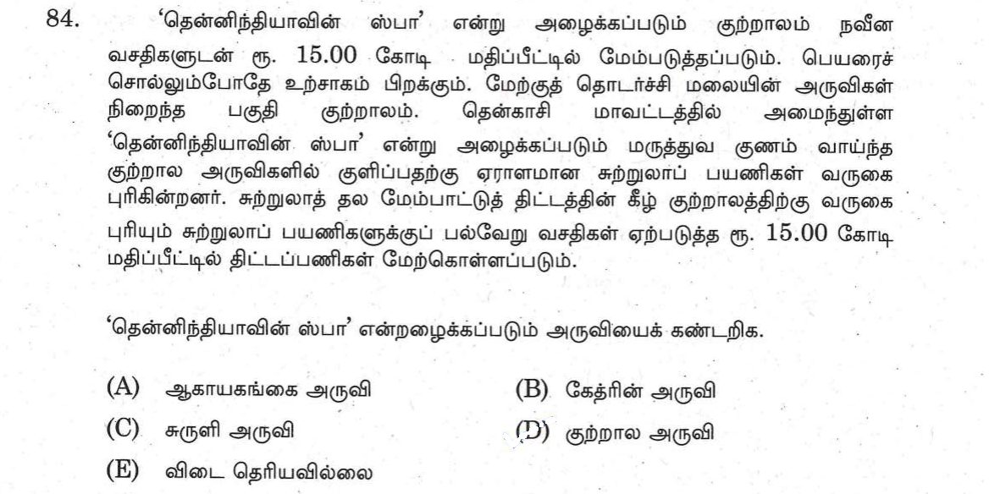
வினாத்தாள் படம் · தொட்டுப் பெரிதாக்கலாம்
‘தென்னிந்தியாவின் ஸ்பா’ என்று அழைக்கப்படும் குற்றாலம் நவீன வசதிகளுடன் ரூ. 15.00 கோடி மதிப்பீட்டில் மேம்படுத்தப்படும். பெயரைச் சொல்லும்போதே உற்சாகம் பிறக்கும். மேற்குத் தொடர்ச்சி மலையின் அருவிகள் நிறைந்த பகுதி குற்றாலம். தென்காசி மாவட்டத்தில் அமைந்துள்ள ‘தென்னிந்தியாவின் ஸ்பா’ என்று அழைக்கப்படும் மருத்துவ குணம் வாய்ந்த குற்றால அருவிகளில் குளிப்பதற்கு ஏராளமான சுற்றுலாப் பயணிகள் வருகை புரிகின்றனர். சுற்றுலாத் தல மேம்பாட்டுத் திட்டத்தின் கீழ் குற்றாலத்திற்கு வருகை புரியும் சுற்றுலாப் பயணிகளுக்குப் பல்வேறு வசதிகள் ஏற்படுத்த ரூ. 15.00 கோடி மதிப்பீட்டில் திட்டப்பணிகள் மேற்கொள்ளப்படும்.
‘தென்னிந்தியாவின் ஸ்பா’ என்றழைக்கப்படும் அருவியைக் கண்டறிக.
- Aஆகாயகங்கை அருவி
- Bகேத்ரின் அருவி
- Cசுருளி அருவி
- Dகுற்றால அருவி
விடையும் விளக்கமும்
TNPSC இறுதி விடை(D) குற்றால அருவி
TNPSC இறுதி விடைக்குறிப்பில் வினா 84
விளக்கம்
சரியான விடை: (D) குற்றால அருவி. விடை பத்தியிலேயே உள்ளது: «தென்காசி மாவட்டத்தில் அமைந்துள்ள ‘தென்னிந்தியாவின் ஸ்பா’ என்று அழைக்கப்படும் மருத்துவ குணம் வாய்ந்த குற்றால அருவிகளில் குளிப்பதற்கு ஏராளமான சுற்றுலாப் பயணிகள் வருகை புரிகின்றனர்.» ஆகாயகங்கை, கேத்ரின், சுருளி ஆகிய அருவிகள் பத்தியில் இடம்பெறவில்லை.
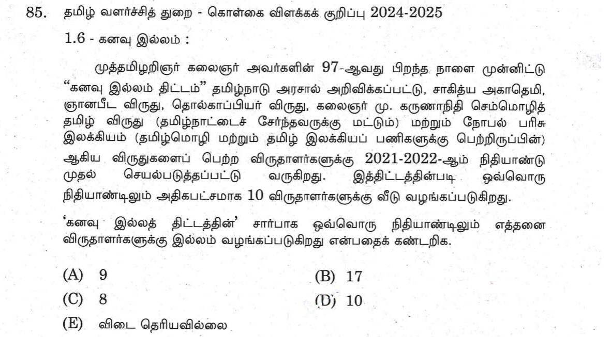
வினாத்தாள் படம் · தொட்டுப் பெரிதாக்கலாம்
தமிழ் வளர்ச்சித் துறை - கொள்கை விளக்கக் குறிப்பு 2024-2025
1.6 - கனவு இல்லம் :
முத்தமிழறிஞர் கலைஞர் அவர்களின் 97-ஆவது பிறந்த நாளை முன்னிட்டு "கனவு இல்லம் திட்டம்" தமிழ்நாடு அரசால் அறிவிக்கப்பட்டு, சாகித்ய அகாதெமி, ஞானபீட விருது, தொல்காப்பியர் விருது, கலைஞர் மு. கருணாநிதி செம்மொழித் தமிழ் விருது (தமிழ்நாட்டைச் சேர்ந்தவருக்கு மட்டும்) மற்றும் நோபல் பரிசு இலக்கியம் (தமிழ்மொழி மற்றும் தமிழ் இலக்கியப் பணிகளுக்கு பெற்றிருப்பின்) ஆகிய விருதுகளைப் பெற்ற விருதாளர்களுக்கு 2021-2022-ஆம் நிதியாண்டு முதல் செயல்படுத்தப்பட்டு வருகிறது. இத்திட்டத்தின்படி ஒவ்வொரு நிதியாண்டிலும் அதிகபட்சமாக 10 விருதாளர்களுக்கு வீடு வழங்கப்படுகிறது.
'கனவு இல்லத் திட்டத்தின்' சார்பாக ஒவ்வொரு நிதியாண்டிலும் எத்தனை விருதாளர்களுக்கு இல்லம் வழங்கப்படுகிறது என்பதைக் கண்டறிக.
- A9
- B17
- C8
- D10
விடையும் விளக்கமும்
TNPSC இறுதி விடைக்குறிப்பில் வினா 85
விளக்கம்
சரியான விடை (D): 10. தமிழ் வளர்ச்சித் துறையின் 2024-2025 கொள்கை விளக்கக் குறிப்பின்படி, 'கனவு இல்லம்' திட்டத்தின் கீழ் ஒவ்வொரு நிதியாண்டிலும் அதிகபட்சமாக 10 விருதாளர்களுக்கு வீடுகள் வழங்கப்படுகின்றன. சாகித்ய அகாதெமி, ஞானபீட விருது போன்ற உயரிய விருதுகளைப் பெற்றவர்களைக் கௌரவிக்க இத்திட்டம் செயல்படுத்தப்படுகிறது.
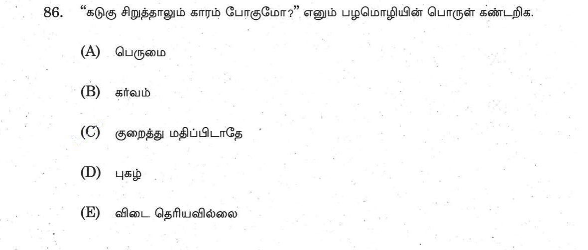
வினாத்தாள் படம் · தொட்டுப் பெரிதாக்கலாம்
“கடுகு சிறுத்தாலும் காரம் போகுமோ?” எனும் பழமொழியின் பொருள் கண்டறிக.
- Aபெருமை
- Bகர்வம்
- Cகுறைத்து மதிப்பிடாதே
- Dபுகழ்
விடையும் விளக்கமும்
TNPSC இறுதி விடை(C) குறைத்து மதிப்பிடாதே
TNPSC இறுதி விடைக்குறிப்பில் வினா 86
விளக்கம்
சரியான விடை (C): குறைத்து மதிப்பிடாதே. "கடுகு சிறுத்தாலும் காரம் போகுமோ?" என்ற பழமொழி, ஒருவரது உருவத்தைக் கண்டு அவரது ஆற்றலையோ அல்லது திறமையையோ குறைத்து மதிப்பிடக் கூடாது என்பதை உணர்த்துகிறது. கடுகு அளவில் சிறியதாக இருந்தாலும் அதன் காரத்தன்மை குறையாது என்பது இதன் நேரடிப் பொருளாகும்.
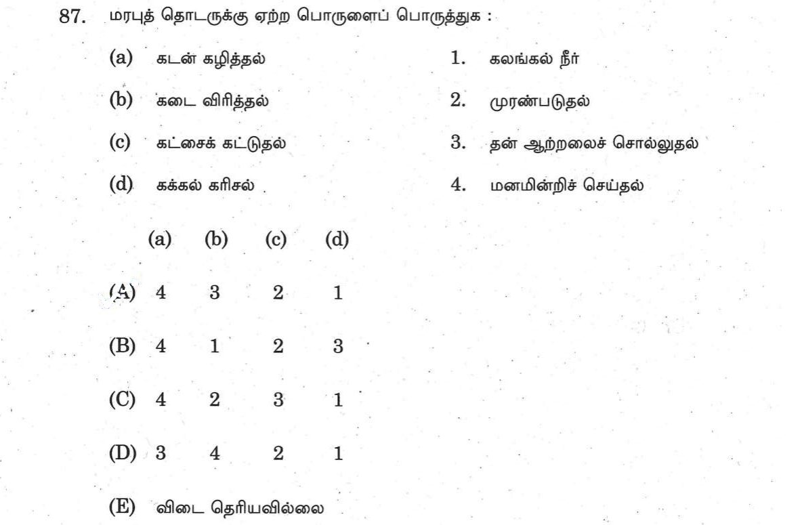
வினாத்தாள் படம் · தொட்டுப் பெரிதாக்கலாம்
மரபுத் தொடருக்கு ஏற்ற பொருளைப் பொருத்துக :
(a) கடன் கழித்தல் - 1. கலங்கல் நீர்
(b) கடை விரித்தல் - 2. முரண்படுதல்
(c) கட்சைக் கட்டுதல் - 3. தன் ஆற்றலைச் சொல்லுதல்
(d) கக்கல் கரிசல் - 4. மனமின்றிச் செய்தல்
- A4 3 2 1
- B4 1 2 3
- C4 2 3 1
- D3 4 2 1
விடையும் விளக்கமும்
TNPSC இறுதி விடை(A) 4 3 2 1
TNPSC இறுதி விடைக்குறிப்பில் வினா 87
விளக்கம்
சரியான விடை (A): 4 3 2 1. இது தமிழ் மரபுத் தொடர்களை அவற்றின் சரியான பொருளுடன் இணைக்கிறது: கடன் கழித்தல் - மனமின்றிச் செய்தல், கடை விரித்தல் - தன் ஆற்றலைச் சொல்லுதல், கட்சைக் கட்டுதல் - முரண்படுதல், மற்றும் கக்கல் கரிசல் - கலங்கல் நீர்.
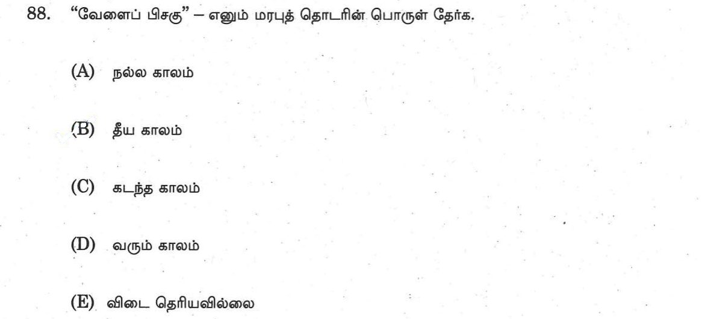
வினாத்தாள் படம் · தொட்டுப் பெரிதாக்கலாம்
“வேளைப் பிசகு” – எனும் மரபுத் தொடரின் பொருள் தேர்க.
- Aநல்ல காலம்
- Bதீய காலம்
- Cகடந்த காலம்
- Dவரும் காலம்
விடையும் விளக்கமும்
TNPSC இறுதி விடை(B) தீய காலம்
TNPSC இறுதி விடைக்குறிப்பில் வினா 88
விளக்கம்
சரியான விடை (B): தீய காலம். 'வேளைப் பிசகு' என்ற மரபுத் தொடர் ஒருவருக்குக் காலம் சாதகமாக இல்லாத நிலையைக் குறிக்கிறது. அதாவது, துரதிர்ஷ்டவசமான அல்லது கெட்ட நேரத்தைக் குறிக்க இத்தொடர் பயன்படுத்தப்படுகிறது.
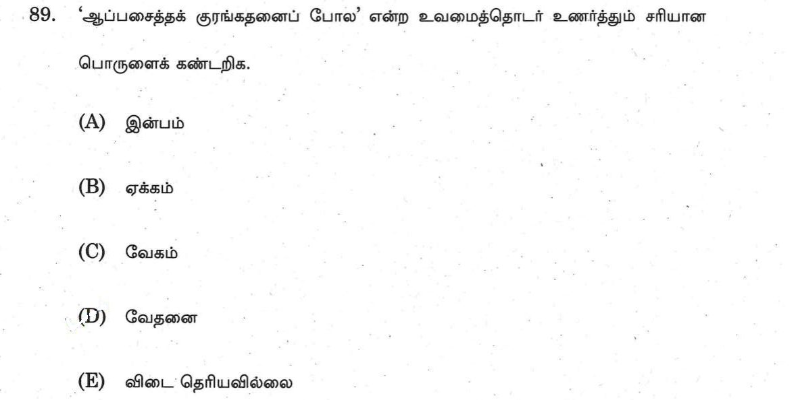
வினாத்தாள் படம் · தொட்டுப் பெரிதாக்கலாம்
‘ஆப்பசைத்தக் குரங்கதனைப் போல’ என்ற உவமைத்தொடர் உணர்த்தும் சரியான பொருளைக் கண்டறிக.
- Aஇன்பம்
- Bஏக்கம்
- Cவேகம்
- Dவேதனை
விடையும் விளக்கமும்
TNPSC இறுதி விடை(D) வேதனை
TNPSC இறுதி விடைக்குறிப்பில் வினா 89
விளக்கம்
சரியான விடை: (D) வேதனை. ‘ஆப்பசைத்தக் குரங்கதனைப் போல’ என்பது உவமைத்தொடர். பஞ்சதந்திரக் கதையில், மரப் பிளவில் வைத்திருந்த ஆப்பை அசைத்துப் பிடுங்கிய குரங்கு, தானே மாட்டிக்கொண்டு துன்பப்பட்டது. தேவையில்லாத செயலால் தானே தேடிக்கொள்ளும் துன்பத்தை – வேதனையை – இவ்வுவமை உணர்த்துகிறது.

வினாத்தாள் படம் · தொட்டுப் பெரிதாக்கலாம்
இந்திய விடுதலைக்குப் பாடுபட்டவர்களுள் ஒருவர் வ.உ. சிதம்பரனார். வ.உ.சி. அவர்கள் தமிழிலும் ஆங்கிலத்திலும் புலமை பெற்றிருந்தார். அவர் வழக்கறிஞர், எழுத்தாளர், பேச்சாளர், தொழிற்சங்கத் தலைவர் என்னும் பன்முகத்தன்மை பெற்றிருந்தார். ஆங்கிலேயரின் கப்பல்களுக்குப் போட்டியாக உள்நாட்டு இந்தியக் கப்பல் நிறுவனத்தைத் தொடங்கியவர். 1906-ஆம் ஆண்டு அக்டோபர் 16-ஆம் நாள் ‘சுதேசி நாவாய்ச் சங்கம்’ என்ற கப்பல் நிறுவனத்தைப் பதிவு செய்தார். வ.உ.சி. சென்னைக்குச் செல்லும்போது பாரதியாரைச் சந்திப்பதை வழக்கமாகக் கொண்டிருந்தார். மேலும், பாரதியார் பாடல்களை விரும்பிக் கேட்பார்.
சுதேசி நாவாய்ச் சங்கத்தை நிறுவியவர் யார்?
- Aவ.உ. சிதம்பரனார்
- Bபாரதியார்
- Cசுபாஷ் சந்திரபோஸ்
- Dபாரதிதாசன்
விடையும் விளக்கமும்
TNPSC இறுதி விடை(A) வ.உ. சிதம்பரனார்
TNPSC இறுதி விடைக்குறிப்பில் வினா 90
விளக்கம்
சரியான விடை: (A) வ.உ. சிதம்பரனார். விடை பத்தியிலேயே உள்ளது: «ஆங்கிலேயரின் கப்பல்களுக்குப் போட்டியாக உள்நாட்டு இந்தியக் கப்பல் நிறுவனத்தைத் தொடங்கியவர். 1906-ஆம் ஆண்டு அக்டோபர் 16-ஆம் நாள் ‘சுதேசி நாவாய்ச் சங்கம்’ என்ற கப்பல் நிறுவனத்தைப் பதிவு செய்தார்.» இதே பத்தி 6-ஆம் வகுப்பு தமிழ் பாடநூலிலும் உள்ளது.

வினாத்தாள் படம் · தொட்டுப் பெரிதாக்கலாம்
இந்திய விடுதலைக்குப் பாடுபட்டவர்களுள் ஒருவர் வ.உ. சிதம்பரனார். வ.உ.சி. அவர்கள் தமிழிலும் ஆங்கிலத்திலும் புலமை பெற்றிருந்தார். அவர் வழக்கறிஞர், எழுத்தாளர், பேச்சாளர், தொழிற்சங்கத் தலைவர் என்னும் பன்முகத்தன்மை பெற்றிருந்தார். ஆங்கிலேயரின் கப்பல்களுக்குப் போட்டியாக உள்நாட்டு இந்தியக் கப்பல் நிறுவனத்தைத் தொடங்கியவர். 1906-ஆம் ஆண்டு அக்டோபர் 16-ஆம் நாள் ‘சுதேசி நாவாய்ச் சங்கம்’ என்ற கப்பல் நிறுவனத்தைப் பதிவு செய்தார். வ.உ.சி. சென்னைக்குச் செல்லும்போது பாரதியாரைச் சந்திப்பதை வழக்கமாகக் கொண்டிருந்தார். மேலும், பாரதியார் பாடல்களை விரும்பிக் கேட்பார்.
வ.உ.சி. சென்னைக்குச் செல்லும்போது யாரைச் சந்திப்பதை வழக்கமாகக் கொண்டிருந்தார்?
- Aநேதாஜி
- Bபாரதியார்
- Cபாரதிதாசன்
- Dதிரு.வி.க.
விடையும் விளக்கமும்
TNPSC இறுதி விடை(B) பாரதியார்
TNPSC இறுதி விடைக்குறிப்பில் வினா 91
விளக்கம்
சரியான விடை: (B) பாரதியார். விடை பத்தியிலேயே உள்ளது: «வ.உ.சி. சென்னைக்குச் செல்லும்போது பாரதியாரைச் சந்திப்பதை வழக்கமாகக் கொண்டிருந்தார். மேலும், பாரதியார் பாடல்களை விரும்பிக் கேட்பார்.» நேதாஜி, பாரதிதாசன், திரு.வி.க. ஆகியோர் பத்தியில் இடம்பெறவில்லை.
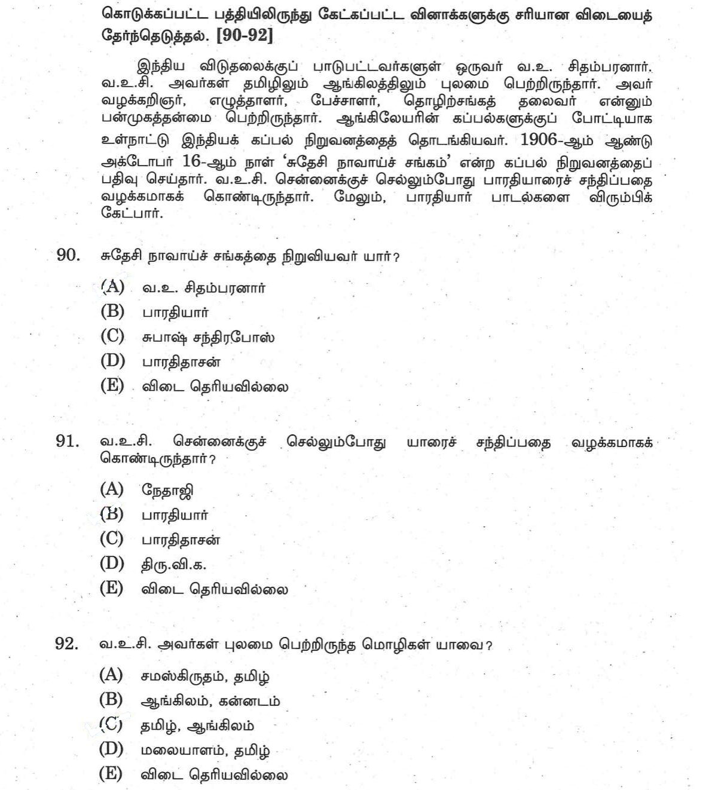
வினாத்தாள் படம் · தொட்டுப் பெரிதாக்கலாம்
இந்திய விடுதலைக்குப் பாடுபட்டவர்களுள் ஒருவர் வ.உ. சிதம்பரனார். வ.உ.சி. அவர்கள் தமிழிலும் ஆங்கிலத்திலும் புலமை பெற்றிருந்தார். அவர் வழக்கறிஞர், எழுத்தாளர், பேச்சாளர், தொழிற்சங்கத் தலைவர் என்னும் பன்முகத்தன்மை பெற்றிருந்தார். ஆங்கிலேயரின் கப்பல்களுக்குப் போட்டியாக உள்நாட்டு இந்தியக் கப்பல் நிறுவனத்தைத் தொடங்கியவர். 1906-ஆம் ஆண்டு அக்டோபர் 16-ஆம் நாள் ‘சுதேசி நாவாய்ச் சங்கம்’ என்ற கப்பல் நிறுவனத்தைப் பதிவு செய்தார். வ.உ.சி. சென்னைக்குச் செல்லும்போது பாரதியாரைச் சந்திப்பதை வழக்கமாகக் கொண்டிருந்தார். மேலும், பாரதியார் பாடல்களை விரும்பிக் கேட்பார்.
வ.உ.சி. அவர்கள் புலமை பெற்றிருந்த மொழிகள் யாவை?
- Aசமஸ்கிருதம், தமிழ்
- Bஆங்கிலம், கன்னடம்
- Cதமிழ், ஆங்கிலம்
- Dமலையாளம், தமிழ்
விடையும் விளக்கமும்
TNPSC இறுதி விடை(C) தமிழ், ஆங்கிலம்
TNPSC இறுதி விடைக்குறிப்பில் வினா 92
விளக்கம்
சரியான விடை: (C) தமிழ், ஆங்கிலம். விடை பத்தியிலேயே உள்ளது: «வ.உ.சி. அவர்கள் தமிழிலும் ஆங்கிலத்திலும் புலமை பெற்றிருந்தார்.»
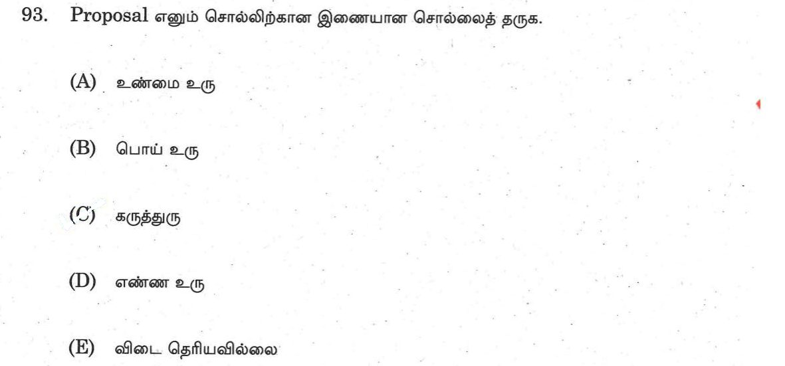
வினாத்தாள் படம் · தொட்டுப் பெரிதாக்கலாம்
Proposal எனும் சொல்லிற்கான இணையான சொல்லைத் தருக.
- Aஉண்மை உரு
- Bபொய் உரு
- Cகருத்துரு
- Dஎண்ண உரு
விடையும் விளக்கமும்
TNPSC இறுதி விடை(C) கருத்துரு
TNPSC இறுதி விடைக்குறிப்பில் வினா 93
விளக்கம்
சரியான விடை (C): கருத்துரு. 'Proposal' என்பதற்கு இணையான தமிழ்ச்சொல் 'கருத்துரு'. கருத்து + உரு = கருத்துரு; ஒரு கருத்தை முறையான வடிவில் அமைத்துப் பிறரது பரிசீலனைக்கு முன்வைப்பது என்பது இதன் பொருள். உண்மை உரு, பொய் உரு, எண்ண உரு ஆகியவை 'Proposal' என்பதற்கு வழங்கப்படுவதில்லை.
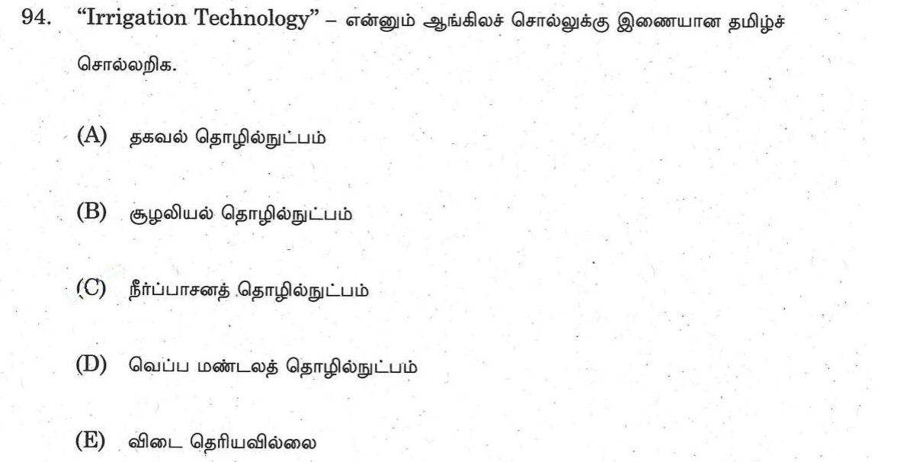
வினாத்தாள் படம் · தொட்டுப் பெரிதாக்கலாம்
"Irrigation Technology" - என்னும் ஆங்கிலச் சொல்லுக்கு இணையான தமிழ்ச் சொல்லறிக.
- Aதகவல் தொழில்நுட்பம்
- Bசூழலியல் தொழில்நுட்பம்
- Cநீர்ப்பாசனத் தொழில்நுட்பம்
- Dவெப்ப மண்டலத் தொழில்நுட்பம்
விடையும் விளக்கமும்
TNPSC இறுதி விடை(C) நீர்ப்பாசனத் தொழில்நுட்பம்
TNPSC இறுதி விடைக்குறிப்பில் வினா 94
விளக்கம்
சரியான விடை (C): நீர்ப்பாசனத் தொழில்நுட்பம். 'Irrigation' என்ற சொல்லிற்கு 'நீர்ப்பாசனம்' என்றும், 'Technology' என்ற சொல்லிற்கு 'தொழில்நுட்பம்' என்றும் பொருள். எனவே, 'Irrigation Technology' என்பது 'நீர்ப்பாசனத் தொழில்நுட்பம்' ஆகும்.
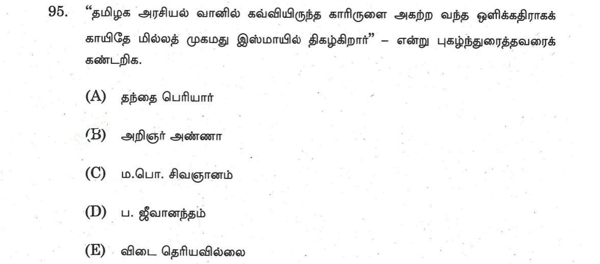
வினாத்தாள் படம் · தொட்டுப் பெரிதாக்கலாம்
"தமிழக அரசியல் வானில் கவ்வியிருந்த காரிருளை அகற்ற வந்த ஒளிக்கதிராகக் காயிதே மில்லத் முகமது இஸ்மாயில் திகழ்கிறார்" - என்று புகழ்ந்துரைத்தவரைக் கண்டறிக.
- Aதந்தை பெரியார்
- Bஅறிஞர் அண்ணா
- Cம.பொ. சிவஞானம்
- Dப. ஜீவானந்தம்
விடையும் விளக்கமும்
TNPSC இறுதி விடை(B) அறிஞர் அண்ணா
TNPSC இறுதி விடைக்குறிப்பில் வினா 95
விளக்கம்
சரியான விடை (B): அறிஞர் அண்ணா. சமச்சீர் 7ஆம் வகுப்பு (பருவம் 3) தமிழ்ப் பாடநூல் இவ்வரிகளை அறிஞர் அண்ணாவின் கூற்றாகத் தருகிறது: «தமிழக அரசியல் வானில் கவ்வியிருந்த காரிருளை அகற்ற வந்த ஒளிக்கதிராகக் காயிதே மில்லத் முகமது இஸ்மாயில் அவர்கள் திகழ்கிறார்». அதே பக்கத்தில் «இப்படிப்பட்ட தலைவர் கிடைப்பது அரிது» என்ற கூற்று தந்தை பெரியாருடையது.
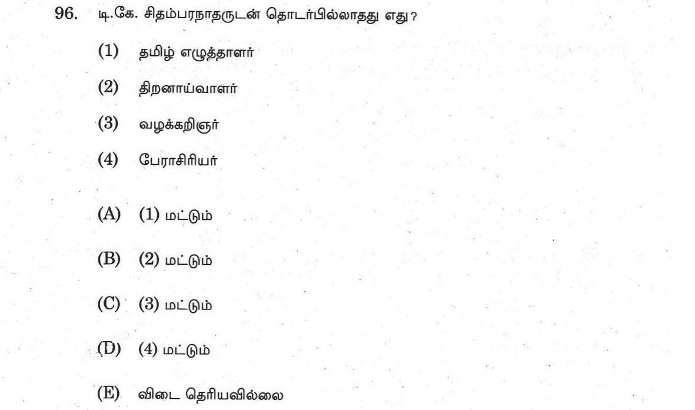
வினாத்தாள் படம் · தொட்டுப் பெரிதாக்கலாம்
டி.கே. சிதம்பரநாதருடன் தொடர்பில்லாதது எது?
(1) தமிழ் எழுத்தாளர்
(2) திறனாய்வாளர்
(3) வழக்கறிஞர்
(4) பேராசிரியர்
- A(1) மட்டும்
- B(2) மட்டும்
- C(3) மட்டும்
- D(4) மட்டும்
விடையும் விளக்கமும்
TNPSC இறுதி விடை(D) (4) மட்டும்
TNPSC இறுதி விடைக்குறிப்பில் வினா 96
விளக்கம்
சரியான விடை (D): (4) மட்டும். சமச்சீர் 7ஆம் வகுப்பு (பருவம் 3) தமிழ்: டி.கே.சி. என அழைக்கப்படும் டி.கே. சிதம்பரநாதர் வழக்கறிஞர் தொழில் செய்தவர்; தமிழ் எழுத்தாளராகவும் திறனாய்வாளராகவும் புகழ் பெற்றவர்; இரசிகமணி என்று சிறப்பிக்கப்பட்டவர். பாடநூல் அவரைப் பேராசிரியர் என்று குறிப்பிடவில்லை.
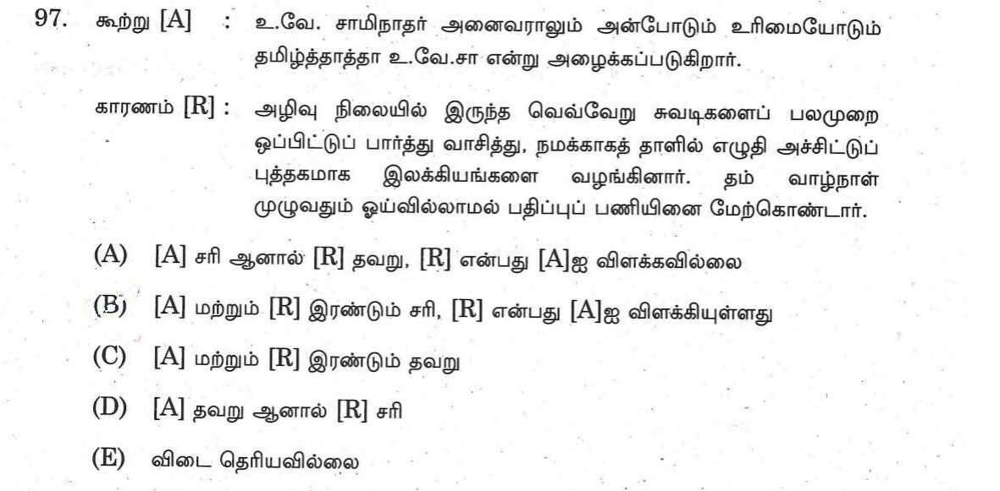
வினாத்தாள் படம் · தொட்டுப் பெரிதாக்கலாம்
கூற்று [A] : உ.வே. சாமிநாதர் அனைவராலும் அன்போடும் உரிமையோடும் தமிழ்த்தாத்தா உ.வே.சா என்று அழைக்கப்படுகிறார்.
காரணம் [R] : அழிவு நிலையில் இருந்த வெவ்வேறு சுவடிகளைப் பலமுறை ஒப்பிட்டுப் பார்த்து வாசித்து, நமக்காகத் தாளில் எழுதி அச்சிட்டுப் புத்தகமாக இலக்கியங்களை வழங்கினார். தம் வாழ்நாள் முழுவதும் ஓய்வில்லாமல் பதிப்புப் பணியினை மேற்கொண்டார்.
- A[A] சரி ஆனால் [R] தவறு, [R] என்பது [A]ஐ விளக்கவில்லை
- B[A] மற்றும் [R] இரண்டும் சரி, [R] என்பது [A]ஐ விளக்கியுள்ளது
- C[A] மற்றும் [R] இரண்டும் தவறு
- D[A] தவறு ஆனால் [R] சரி
விடையும் விளக்கமும்
TNPSC இறுதி விடை(B) [A] மற்றும் [R] இரண்டும் சரி, [R] என்பது [A]ஐ விளக்கியுள்ளது
TNPSC இறுதி விடைக்குறிப்பில் வினா 97
விளக்கம்
சரியான விடை (B): [A] மற்றும் [R] இரண்டும் சரி, [R] என்பது [A]ஐ விளக்கியுள்ளது. உ.வே. சாமிநாதர், என்றென்றும் அழிந்துபோகும் நிலையில் இருந்த பண்டைய தமிழ் ஓலைச்சுவடிகளை மீட்டெடுத்துப் பதிப்பிப்பதில் அவர் மேற்கொண்ட வாழ்நாள் முழுவதுமான மகத்தான முயற்சியால் 'தமிழ்த்தாத்தா' என்ற பட்டத்தைப் பெற்றார்.
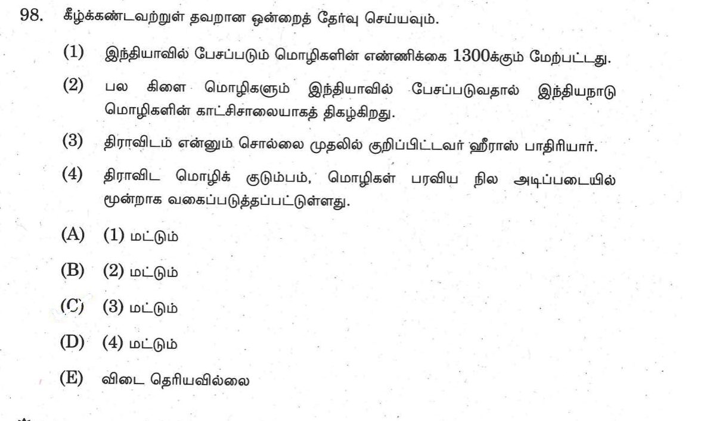
வினாத்தாள் படம் · தொட்டுப் பெரிதாக்கலாம்
கீழ்க்கண்டவற்றுள் தவறான ஒன்றைத் தேர்வு செய்யவும்.
(1) இந்தியாவில் பேசப்படும் மொழிகளின் எண்ணிக்கை 1300க்கும் மேற்பட்டது.
(2) பல கிளை மொழிகளும் இந்தியாவில் பேசப்படுவதால் இந்தியநாடு மொழிகளின் காட்சிசாலையாகத் திகழ்கிறது.
(3) திராவிடம் என்னும் சொல்லை முதலில் குறிப்பிட்டவர் ஹீராஸ் பாதிரியார்.
(4) திராவிட மொழிக் குடும்பம், மொழிகள் பரவிய நில அடிப்படையில் மூன்றாக வகைப்படுத்தப்பட்டுள்ளது.
- A(1) மட்டும்
- B(2) மட்டும்
- C(3) மட்டும்
- D(4) மட்டும்
விடையும் விளக்கமும்
TNPSC இறுதி விடை(C) (3) மட்டும்
TNPSC இறுதி விடைக்குறிப்பில் வினா 98
விளக்கம்
சரியான விடை (C): (3) மட்டும். சமச்சீர் 9ஆம் வகுப்புத் தமிழ்: «திராவிடம் என்னும் சொல்லை முதலில் குறிப்பிட்டவர் குமரிலபட்டர்»; ஹீராஸ் பாதிரியார் இச்சொல் தமிழ் → தமிழா → தமிலா → டிரமிலா → ட்ரமிலா → த்ராவிடா → திராவிடா என வந்ததாக விளக்குகிறார். எனவே 'ஹீராஸ் பாதிரியார் முதலில் குறிப்பிட்டார்' என்ற (3) தவறு.
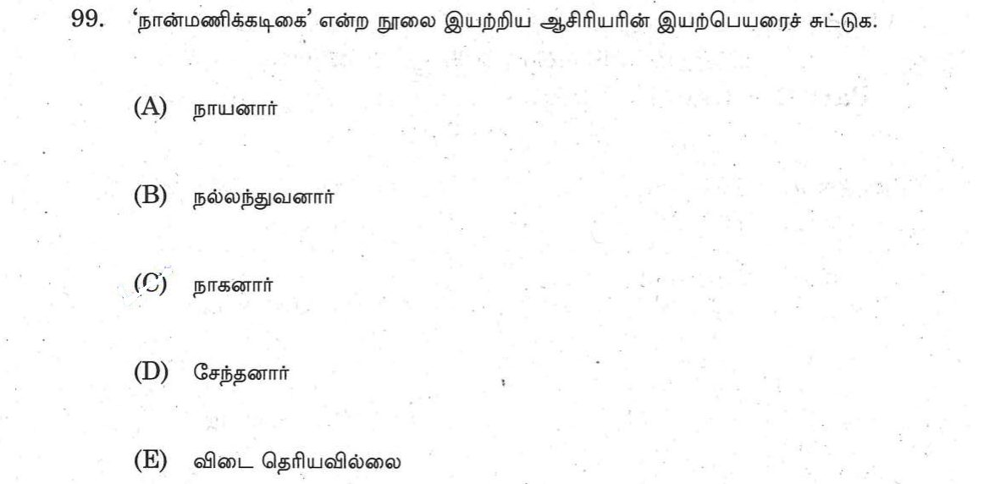
வினாத்தாள் படம் · தொட்டுப் பெரிதாக்கலாம்
'நான்மணிக்கடிகை' என்ற நூலை இயற்றிய ஆசிரியரின் இயற்பெயரைச் சுட்டுக.
- Aநாயனார்
- Bநல்லந்துவனார்
- Cவிளம்பி நாகனார்
- Dசேந்தனார்
விடையும் விளக்கமும்
TNPSC இறுதி விடை(C) விளம்பி நாகனார்
TNPSC இறுதி விடைக்குறிப்பில் வினா 99
விளக்கம்
சரியான விடை (C): விளம்பி நாகனார். நான்மணிக்கடிகை பதினெண்கீழ்க்கணக்கு நூல்களுள் ஒன்று; 104 வெண்பாக்களைக் கொண்டு விளம்பி நாகனாரால் இயற்றப்பட்டது. ஒவ்வொரு பாடலிலும் நான்கு அரிய கருத்துகள் உள்ளதால் இப்பெயர் பெற்றது.
100
வினா 100 · பொதுத் தமிழ்
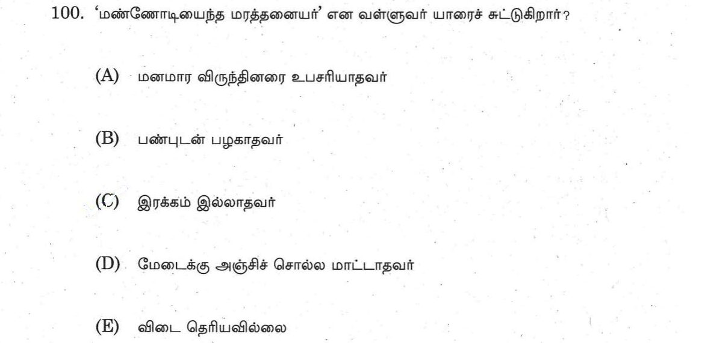
வினாத்தாள் படம் · தொட்டுப் பெரிதாக்கலாம்
'மண்ணோடியைந்த மரத்தனையர்' என வள்ளுவர் யாரைச் சுட்டுகிறார்?
- Aமனமார விருந்தினரை உபசரியாதவர்
- Bபண்புடன் பழகாதவர்
- Cஇரக்கம் இல்லாதவர்
- Dமேடைக்கு அஞ்சிச் சொல்ல மாட்டாதவர்
விடையும் விளக்கமும்
TNPSC இறுதி விடை(C) இரக்கம் இல்லாதவர்
TNPSC இறுதி விடைக்குறிப்பில் வினா 100
விளக்கம்
சரியான விடை (C): இரக்கம் இல்லாதவர். கண்ணோட்டம் அதிகாரத்தில் உள்ள திருக்குறள் 576: 'மண்ணோ டியைந்த மரத்தனையர் கண்ணோ டியைந்துகண் ணோடா தவர்'. கண் இருந்தும் பிறரிடம் கண்ணோட்டம் (இரக்கம்) காட்டாதவர், மண்ணில் ஊன்றி நிற்கும் மரத்திற்கு ஒப்பானவர் என்பது இதன் பொருள்.